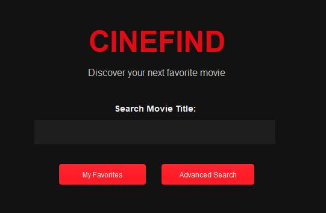
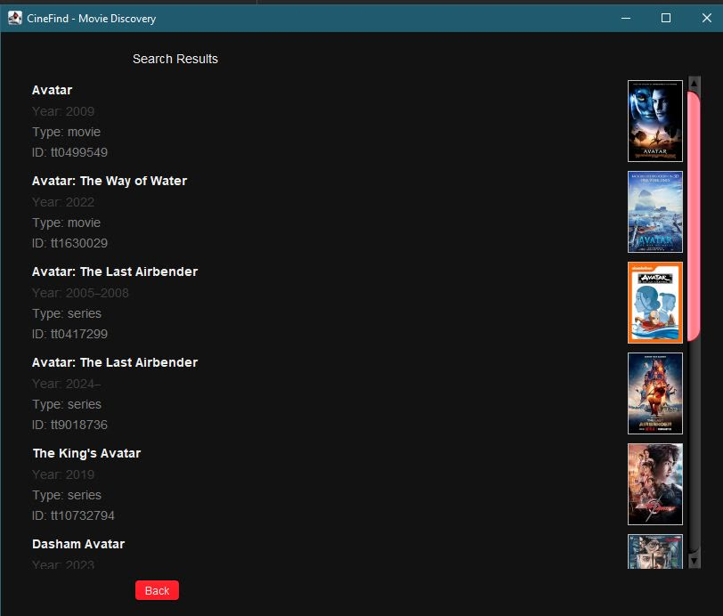
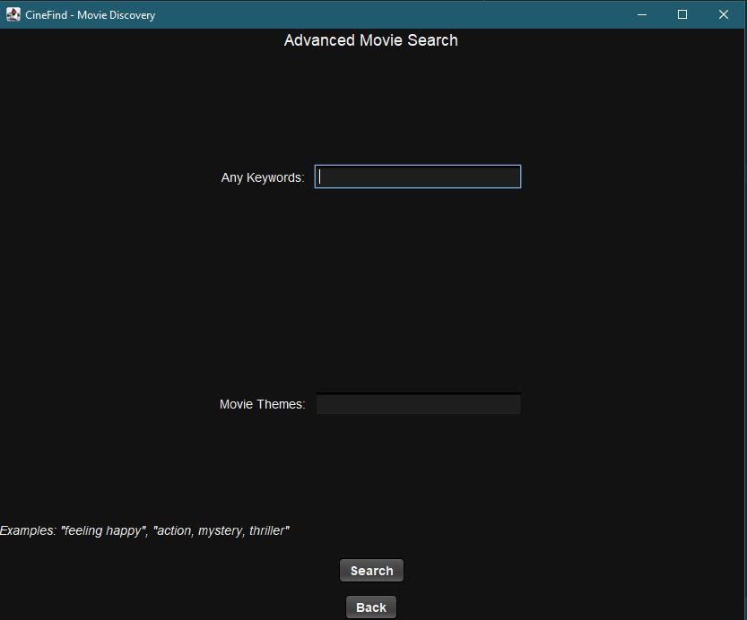
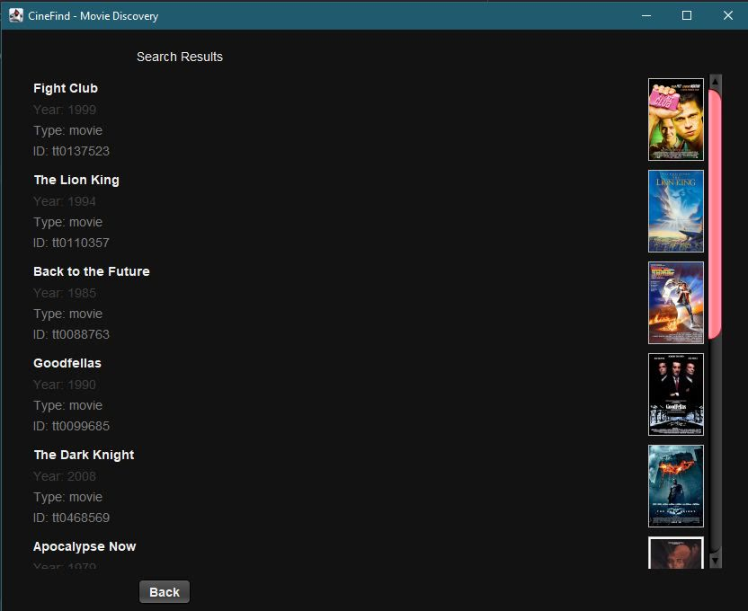
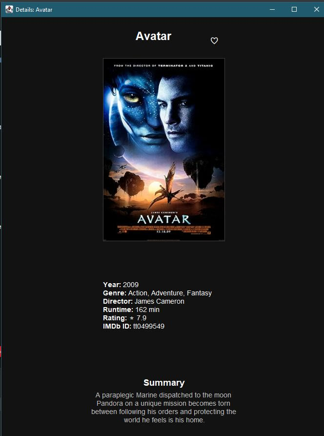
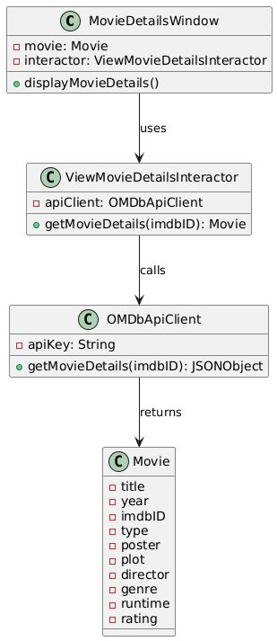
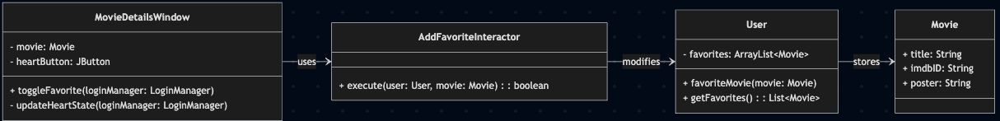

CineFind
I kept struggling to find a movie to watch, so I decided to build something that would help me choose. CineFind is the result, built as a team project for CSC207.
It's a desktop app for finding something to watch. You can search movies by title, open a movie for its poster, plot, cast, genre and rating, and save favorites to an account that keeps them between sessions. The feature that sets it apart is a mood search: describe how you're feeling and the themes you want, and CineFind recommends the 10 movies that fit best.


Mood search


How it works
Building the movie database. For each movie title, SerpAPI finds the top Google result, Zyte scrapes that page for everything relevant to the movie, and Nomic turns the text into an embedding. The embeddings are stored in a Pinecone index.
Searching it. Your mood and themes are embedded the same way, and Pinecone returns the 10 movies whose embeddings are closest by cosine similarity. Each one is then looked up on OMDb for its poster, plot and rating, and turned into a Movie object for the results screen.

Design
- Clean Architecture. Control always flows inward: Swing panels call controllers, controllers call use-case interactors, and interactors call the API clients. The UI never talks to an API directly.
- SOLID. Each class has one job; for example, the advanced search controller only packages input from the UI into a request. Panels depend on controllers and controllers on interactors, not on concrete API clients.
- Simple factory. OMDb's JSON responses are converted into the app's own Movie objects in one place, so the rest of the program never handles raw JSON.
- Errors users can act on. Mistakes like mismatched passwords or a movie that isn't found raise specific exceptions and show a clear message instead of crashing the app.
- Saved between sessions. Usernames, passwords and each user's favorites are written to a file and loaded back on start-up.
- Code quality. Checkstyle and SonarQube before every pull request, code review on each PR, and JUnit tests.
UML


Code
The mood search, from AdvancedSearchInteractor. Logging and some error handling are cut for length.
public Movie[] search(String userPreferences) {
// Step 1: Create embedding for user query
float[] userEmbedding = embeddingGenerator.embedQuery(userPreferences);
// Step 2: Query Pinecone for similar movie embeddings
List<PineconeClient.PineconeMatch> matches = pineconeClient.query(userEmbedding, 10);
// Step 3: Fetch full movie details from OMDB for each match
List<Movie> movies = new ArrayList<>();
for (PineconeClient.PineconeMatch match : matches) {
String title = match.metadata.optString("title", "Unknown");
// Search OMDB by title to get the movie
JSONObject searchJson = new JSONObject(omdbClient.searchMovies(title));
String imdbID = searchJson.getJSONArray("Search").getJSONObject(0).optString("imdbID");
// Fetch full details using imdbID
JSONObject detailsJson = omdbClient.getMovieDetails(imdbID);
// ... build a Movie from detailsJson and add it to movies
// Small delay to respect OMDB rate limits
Thread.sleep(200);
}
return movies.toArray(new Movie[0]);
}Turning OMDb's JSON into the app's own Movie object, from ViewMovieDetailsInteractor. This is the simple factory: the rest of the program only ever sees a finished Movie.
public Movie getMovieDetails(String imdbID) throws Exception {
JSONObject json = apiClient.getMovieDetails(imdbID);
if (json == null || json.has("Error")) {
return null;
}
Movie m = new Movie(
json.optString("Title"),
json.optString("Year"),
json.optString("imdbID"),
json.optString("Type"),
json.optString("Poster")
);
m.plot = json.optString("Plot");
m.director = json.optString("Director");
m.genre = json.optString("Genre");
m.runtime = json.optString("Runtime");
m.rating = json.optString("imdbRating");
return m;
}